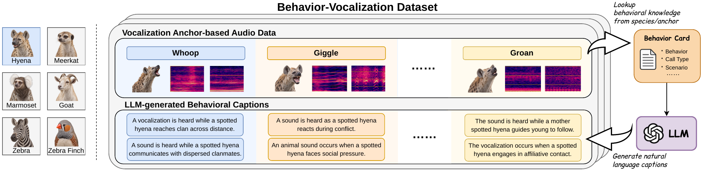
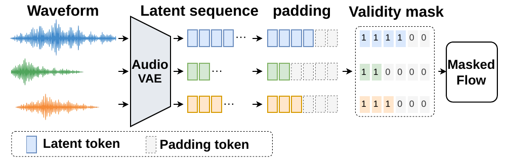
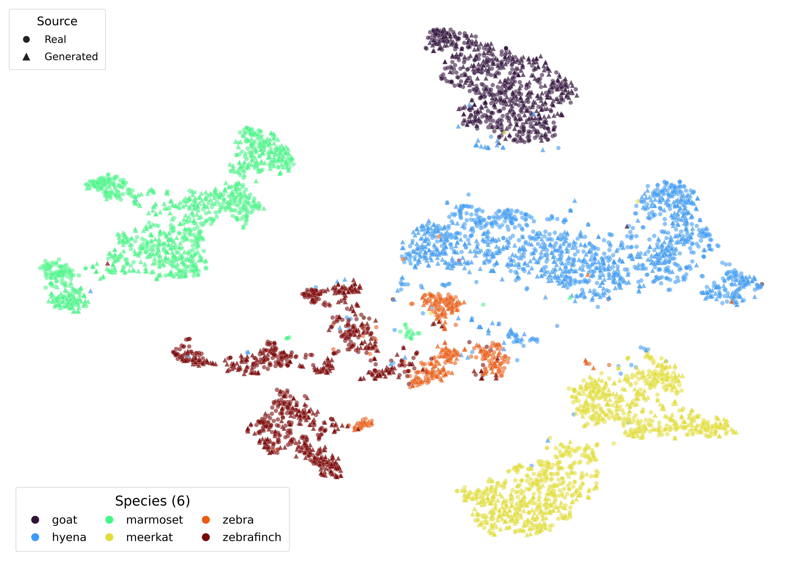

A / REFERENCE
Awaiting audio
Behavior-conditioned bioacoustics
Behavior-Conditioned
Animal Vocalization Generation
Generating short, duration-variable animal vocalizations from natural-language descriptions of behaviors, social interactions, and contexts.
6species
31,191vocalization events
42vocalization anchors
524.3minutes of audio
01 / LISTEN
Listen by behavior
Select a species, read its literature-grounded behavioral condition, and compare the real reference with generated vocalizations. Audio samples will be added in the next content pass.
Behavioral condition
Add a literature-grounded hyena behavior condition here.
- Species
- Spotted hyena
- Anchor
- To be added
- Duration
- To be added
B / PROPOSED
Awaiting audio
TangoFlux Event-Aware
Compare all systems Zero-shot and standard fine-tuning
C / BASELINE
Awaiting audio
TangoFlux Zero-shot
D / BASELINE
Awaiting audio
TangoFlux Fine-tuned
02 / OVERVIEW
From field annotations to conditioned generation
Behavior-conditioned animal vocalization generation aims to synthesize vocalizations from natural-language descriptions of animal behaviors, social interactions, and contexts.
We establish a pipeline spanning data construction, generation, and evaluation. Public bioacoustic data from six species is linked with species-specific ethological and bioacoustic literature to form natural-language behavioral conditions. A rectified-flow generator is then adapted with Event-Aware variable-length modeling for short, duration-variable vocalizations.
BeVo dataset
Literature-grounded behavioral conditions linked to public bioacoustic recordings.
Event-Aware modeling
Actual-duration encoding with masked padded latent positions.
Multidimensional evaluation
Discriminability, acoustic fidelity, and language-aligned representation fidelity.
03 / DATASET
The BeVo Dataset
A standardized collection of vocalization events connected to literature-grounded behavior cards through 42 species-specific vocalization anchors.

Spotted hyena
12,242 events
Meerkat
5,639 events
Common marmoset
6,000 events
Goat
3,586 events
Plains zebra
615 events
Zebra finch
3,109 events
04 / METHOD
Event-Aware variable-length modeling
Short animal vocalizations are encoded at their actual durations so that padded positions neither act as valid context nor contribute to the rectified-flow objective.

- 01
Encode actual duration
Each vocalization is independently encoded with only the padding needed for VAE hop alignment.
- 02
Pad within the minibatch
Variable-length latent sequences are padded only to the longest event in the current batch.
- 03
Mask attention and loss
Padding is excluded from transformer context and rectified-flow optimization.
05 / RESULTS
Results at a glance
Task-specific adaptation improves all evaluated metrics. Event-Aware modeling further improves vocalization discriminability and acoustic fidelity over standard fine-tuning.
Macro accuracy ↑
61.99%59.86% fine-tunedFAD ↓
1.22391.4047 fine-tunedAFDD ↓
0.92061.2480 fine-tunedBehavior-swap increase
85.39%Δp target +0.3139Overall evaluation↑ higher is better · ↓ lower is better
| System | Macro Acc. ↑ | mAP ↑ | FAD ↓ | AFDD ↓ |
|---|---|---|---|---|
| TangoFlux Zero-shot | 0.1787 | 0.2022 | 6.7080 | 3.4759 |
| TangoFlux Fine-tuned | 0.5986 | 0.6345 | 1.4047 | 1.2480 |
| TangoFlux Event-Aware | 0.6199 | 0.6551 | 1.2239 | 0.9206 |
Representation analysis
Real and generated vocalizations share broad species-level organization.
A joint t-SNE visualization of AnimalCLAP embeddings uses circles for real samples and triangles for generated samples.

06 / SCOPE
What this demo shows
Associated conditions
Behavioral conditions describe groups of recordings sharing a vocalization anchor, not verified behavior for each event.
Linguistic generalization
Evaluation uses new formulations of behavioral knowledge represented during training, not entirely unseen behaviors.
Distribution-level fidelity
CLAP-FAD measures species-wise distribution fidelity in language-aligned spaces, not sample-wise prompt correctness.
07 / CITATION
Cite this work
The final venue, paper URL, and BibTeX entry can be updated once available.
@article{deng2026bevo,
title = {Behavior-Conditioned Animal Vocalization Generation},
author = {Deng, Xinlong and Tian, Yong and Guan, Jian and Jiang, Jie and Cao, Yin},
year = {2026},
note = {Manuscript}
}